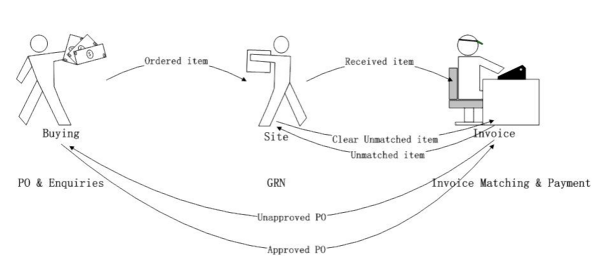

The use of the word "Problem" is slightly misleading in this context, as although it does deal with invoice problems, actually it covers the approval processing for Purchase Invoices. The spirit behind this feature is to allow you to work by exceptions by approving or process Purchase Invoices on a work-flow basis. This is particularly useful with
As the name suggests the Problem Invoice Workbench is for helping you to identify and hence list all the posted invoices with "Problems". An invoice with a "problem" is an invoice that is flagged with one of the various query status codes as defined in the
Regarding each different Query type, the User will be given different options for dealing with the individual "Problem" invoice, for example approving the invoice by changing the hold code, keying in missing ticket GRN etc.
The Problem Invoice Workbench was designed to include very comprehensive functionality and workflow within procurement and financial processing.
Depending on your business process, you may use all or only part of the functions. You can simply use it as personal{is}ed invoice management tool for helping the PL user to look after registered invoices or invoices with problems for payment. (For details of how to amend or approve invoices, refer to Holding and Approving Invoices.) Or you can tailor your business process according to the given workflow, so that you can implement all the functions mentioned above. (For the detailed setup or processing under Procurement and financials you also need to refer to the appropriate documentation.)
Problem Invoice Workbench, assumes a set relationship between Buying, Site and Invoice processing as illustrated below:

Buying is in charge of raising orders; the Site can input GRNs against the ordered items. The Invoice staff can do invoice matching and payment against the received items. As the invoice is moved from one "query type" to another so too may ownership.
There are no specific limitations on its use -- the "old" method of amending invoices for approval in the original 'input' menus can be operated in parallel with this workbench.